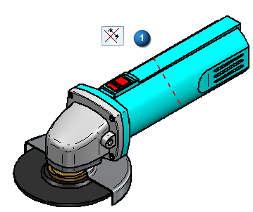
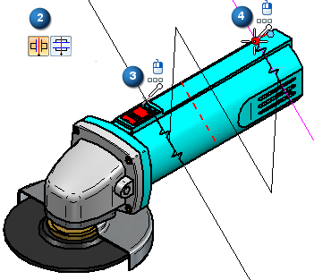
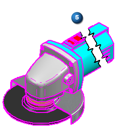
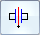
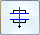

Break an isometric view with a break axis
You can create a broken view using an axis other than the horizontal and vertical edges of the drawing view. Use this method for isometric views and for views elongated in a direction other than X and Y.
You can define an axis at an angle, and then choose whether to break the view along the defined axis, as shown in the following example, or perpendicular to it.



-
On the drawing sheet, right-click a drawing view and choose the Broken View command
 .
.A line is displayed on the drawing view and moves with the cursor across the sheet.
-
On the command bar, from the Break Line Orientation list, select Use Break Axis.
-
Define the break line axis:
-
On the command bar, click Define Break Axis
 .
. -
Click two keypoints or linear elements in the drawing view. Use keypoints if you want the break lines to be associative to the geometry in the part view.
The resulting break axis is displayed as a red dashed line, as shown above (1).
-
-
Specify break direction by selecting one of these buttons:

'Along the Axis' Break-
Specifies that the drawing view is broken along the defined break axis. This was the option used to create the previous example. (2)

'Normal to Axis' Break-
Specifies that the drawing view is broken perpendicular to the defined break axis.
-
(Optional) Click the Break Line Type button, and then select a straight, curved, or zigzag line type to show in the drawing view.
-
Click two keypoints to define the start location and the end location of the portion of the drawing view that you do not want to display. Refer to (3)(4), above.
The region to be removed is now defined.
-
On the command bar, click Finish to update the drawing view.
The broken view is displayed (5). The break axis and break line pair used to defined the view are shown only when you are editing the drawing view in an unbroken state.
If you do not like the results, you can use the Undo and Redo commands. You also can delete the broken view by selecting the break line pair and pressing the Delete key.
To adjust the broken view in other ways, you have to edit the break lines used to create it. For more information, see Modify break lines in a broken view.
How do I
Create a broken-out section viewModify a broken-out section view
Create a broken view
Connect a break line at a distance
Display break lines and cropped edges in a broken view
Modify break lines in a broken view
Copy break lines between drawing views
Remove inherited break lines
Learn more
Broken viewsLook up more details
Broken-Out commandBroken View command
Broken View command bar
Inherit Break Lines command
Remove Break Line Inheritance command